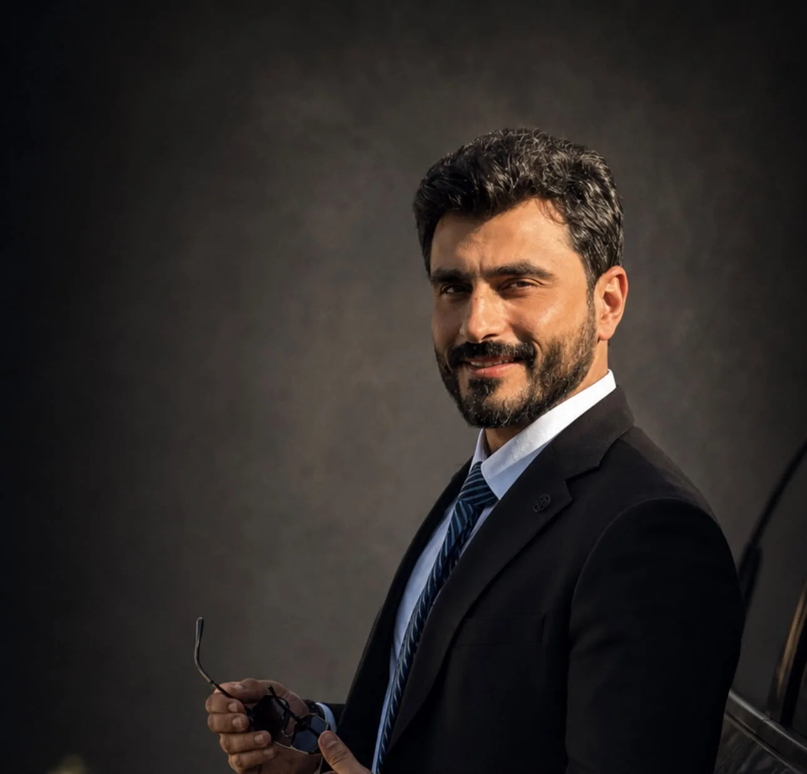
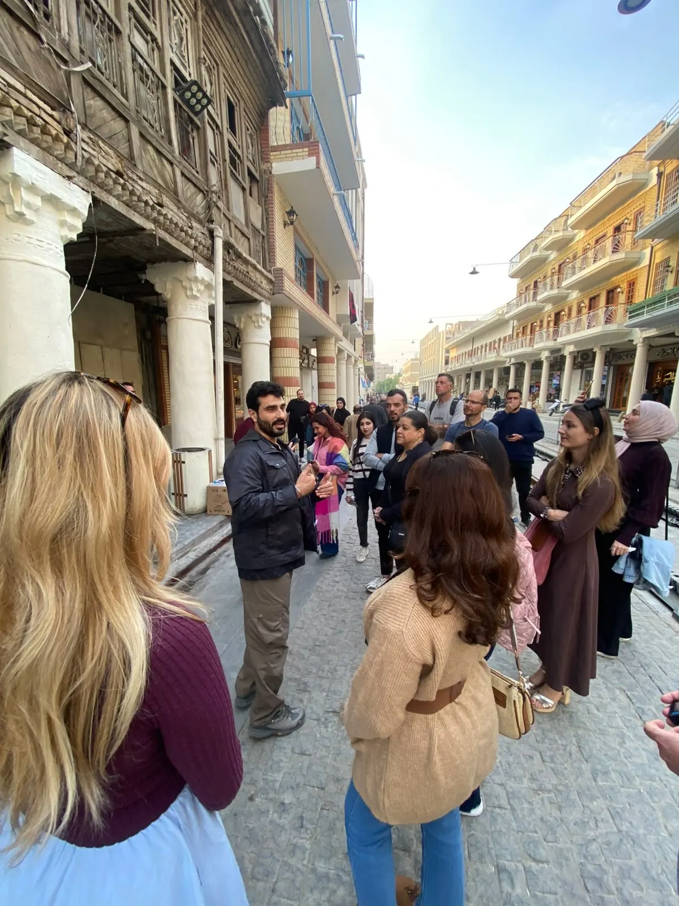

Osamah Mousa is an international Media and Strategic Communications Specialist, Content Creator, Cross-Cultural Communication Specialist, and Documentary Production Facilitator, dedicated to fostering meaningful connections between people through storytelling, cultural exchange, and international collaboration.
Quick Facts
- Roles: Media & Strategic Communications Specialist, Filmmaker, Content Creator, Cross-Cultural Communication Specialist, Documentary Production Facilitator
- Founder: Co-Founder, Iraqi Travellers Cafe (since 2019)
- Filmmaking: Writer, Director & Producer — "A Reunion After 50 Years" (short documentary)
- Featured on: Best Ever Food Review Show, DW, TRT World, Alhurra, and regional Iraqi television
- Education: Master's degree, Biochemistry
As the Co-Founder of Iraqi Travellers Cafe (ITC), a non-profit initiative established in 2019, Osamah has led initiatives that promote intercultural dialogue, responsible tourism, and people-to-people diplomacy, creating meaningful experiences that connect international visitors with local communities while encouraging mutual respect and authentic human interaction.
Driven by a lifelong passion for history, civilizations, and human societies, he specializes in researching world cultures, heritage, traditions, and community life, combining research, communication, and storytelling to produce authentic narratives that inspire curiosity and strengthen understanding between diverse communities.
As a Content Creator, Osamah develops educational and documentary-style content focused on culture, history, travel, and human stories, presenting authentic perspectives that encourage audiences to discover the richness and diversity of societies around the world.
He also collaborates with international journalists, filmmakers, television networks, documentary production teams, and digital creators as a Documentary Production Facilitator. His expertise spans cultural research, story development, production coordination, location scouting, logistical facilitation, local access, media relations, and cross-cultural communication, helping international productions tell accurate, respectful, and impactful stories.
His work has been featured by internationally recognized media organizations, including Best Ever Food Review Show, DW, TRT World, and Alhurra, alongside several Iraqi and regional television networks.
Beyond media production, Osamah designs and leads cultural initiatives, educational programs, public events, and international exchange activities that encourage dialogue, cooperation, and global citizenship, reflecting a belief that meaningful communication begins with curiosity, empathy, and a genuine willingness to understand different cultures.
Holding a Master's degree in Biochemistry, Osamah brings analytical thinking, research methodology, and strategic communication together to build initiatives with lasting social and cultural impact.